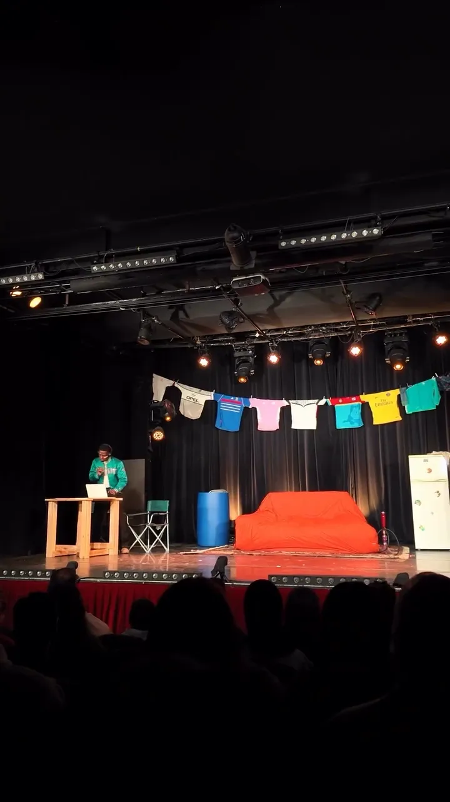
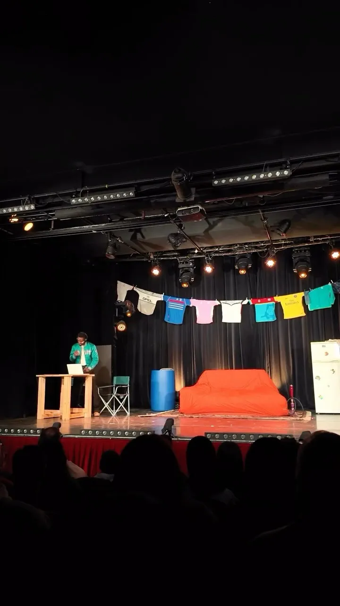

URBN’s View
- Projet
- Formats · Entretiens à la sortie du spectacle
- Date
- samedi 21 février 2026
- Lieu
- Apollo Théâtre, Paris
- Édition
- #1
Épisode 1 : Le Bourgeois gentilhomme revisité par PAT Studio, à l’Apollo Théâtre.
À l’affiche de l’Apollo Théâtre, Le Bourgeois gentilhomme de Molière modernisé. La troupe PAT Studio revisite le classique avec une adaptation rythmée : codes contemporains, satire sociale plus pertinente que jamais.
L’Urbaine a tendu le micro à la troupe et au public à la sortie de la salle. Merci à toutes les personnes qui ont pris le temps de répondre.
